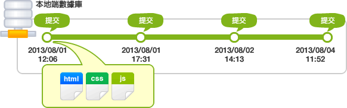

Git的基本介紹
記錄修改的提交
若想把變更與新增的檔案/目錄儲存到數據庫中，您需要執行提交（Commit）。
執行提交後，數據庫裡會產生上次提交的狀態與現在狀態的差異記錄（也被稱為Revision）。
如下圖，提交是以時間順序排列狀態被儲存到數據庫中的。憑藉該提交和最新的檔案狀態，就可以知道過去的修改記錄以及內容。

為了區分提交，系統會產生一組識別碼來給提交命名，識別碼會根據提交修改的內容計算出不重複的40位英文數字。指定識別碼，就可以在數據庫中找到對應的提交。
Tips（小撇步 ）
像錯誤修復或功能添加之類不同含義的更改，要盡量分開來提交。這樣可以方便事後從歷史記錄裡找出特定的修改內容。
執行提交時，系統會要求輸入提交訊息。請務必輸入提交訊息，因為在訊息空白的狀態下執行提交是會失敗的。
Tips（小撇步 ）
提交訊息是查看其他人提交的修改內容或自己檢查歷史記錄時重要的資料。所以要用心填寫讓人容易理解的提交訊息。
Git的標準提交訊息：
第1行：提交時修改內容的摘要 第2行：空行 第3行以後：修改的理由
建議以這種形式填寫提交訊息